UX Designer
4 Weeks
4 Designers
Figma, Balsamiq
We began our iterative design process by brainstorming and visualizing possible directions for a centralized homepage interface for Warp — a developer-first AI terminal. This dashboard would serve as a hub to manage teams, sessions, recent activity, and AI-powered suggestions, helping users navigate Warp's ecosystem more efficiently.
Our goal was to create an interface for desktop users, specifically engineers who use Warp in collaborative environments. These users often struggle to find relevant files, understand team activity, or discover Warp's advanced AI tools. A dashboard could surface these features proactively, reducing friction and cognitive overhead.
As a group, we sketched four distinct layout ideas, each exploring different ways to surface core functionalities such as team management, AI suggestions, account settings, and product metrics. Each member contributed three sketches — a home screen and two supporting screens — for a total of 12 unique sketches.
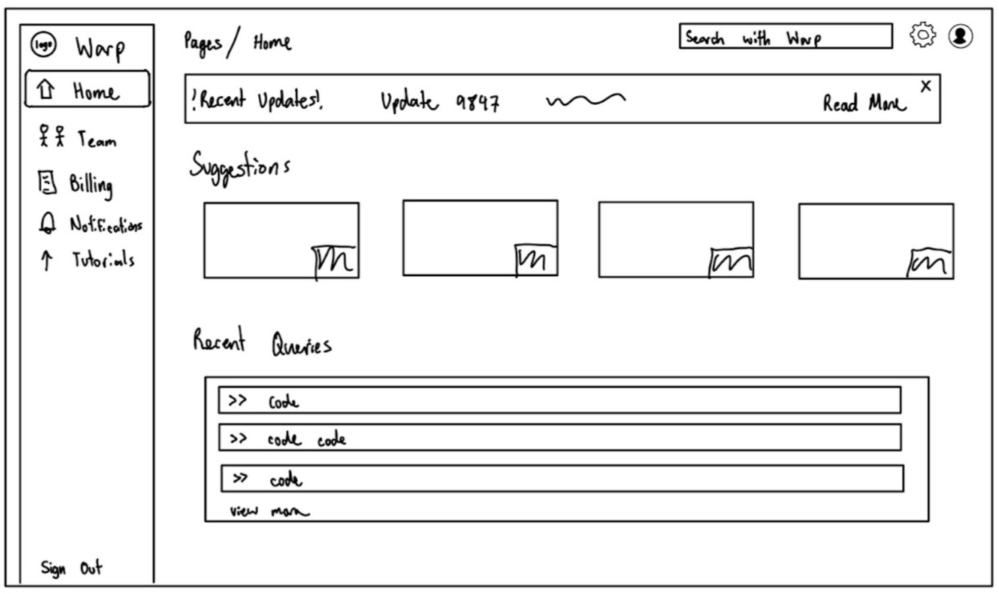
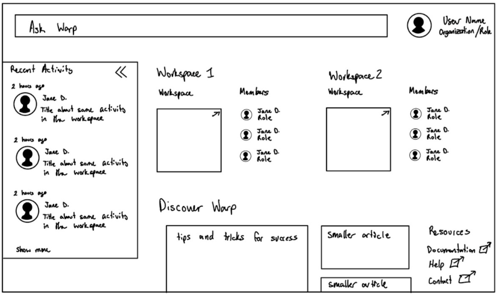
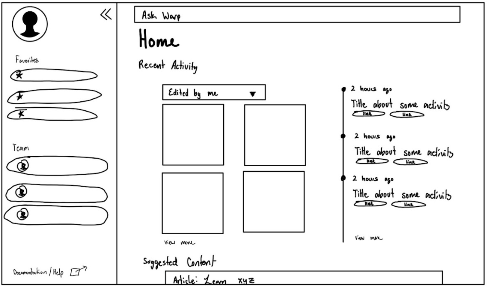
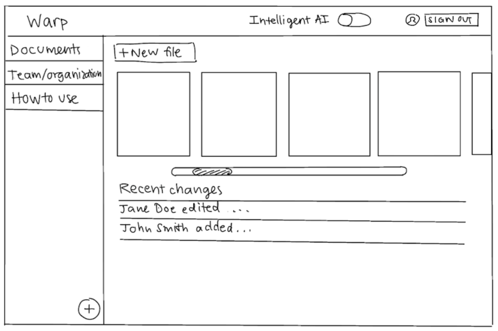
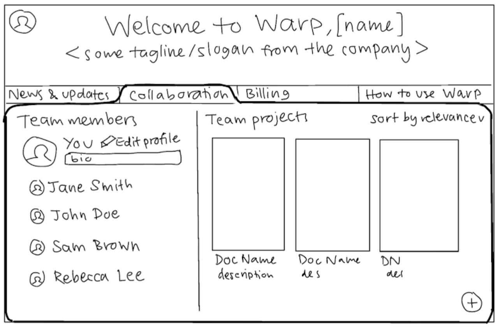
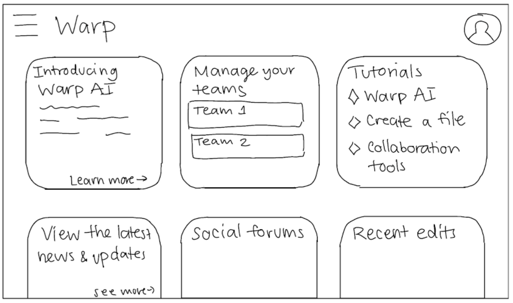
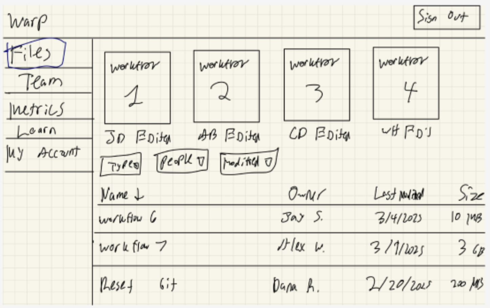
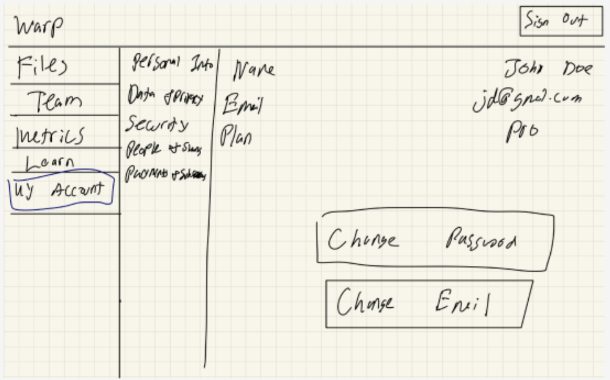
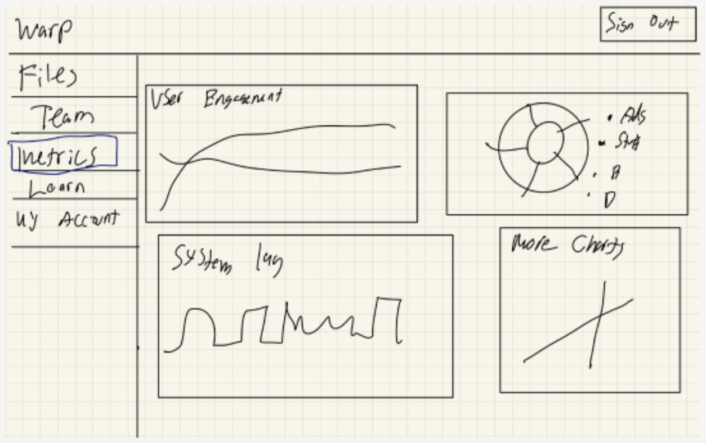
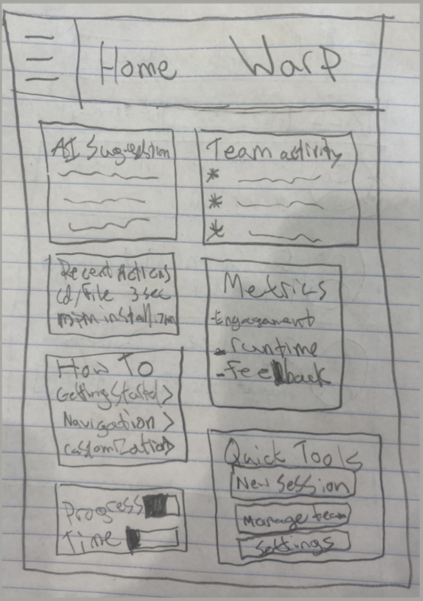
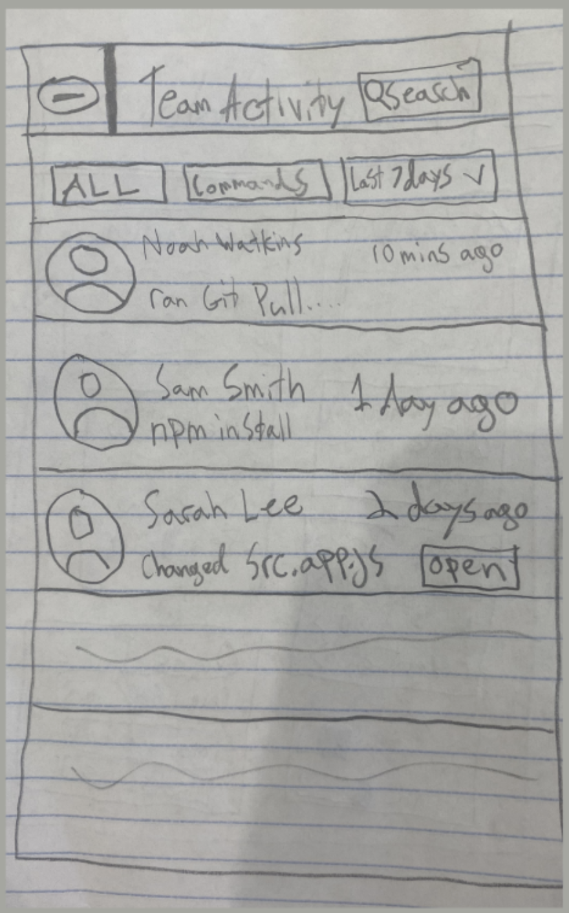
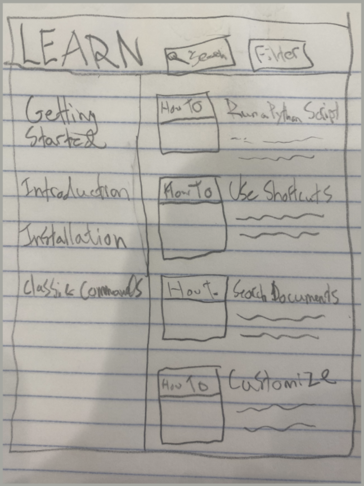
After reviewing all sketches, we had a team discussion around what elements worked well and which approaches best aligned with Warp's goals. From that conversation, we created a consolidated wireframe using Balsamiq, combining the strongest parts of our sketches.
Key decisions included surfacing team management and metrics in a left-side tab panel, while allowing quick access to AI suggestions and recent activity. This layout prioritized visibility without cluttering the interface.
You can view the final wireframes and our walkthrough in the Loom video below.
After submitting our wireframe via Loom, we received detailed feedback from Warp stakeholders and critiqued our work in person with Vanessa Cho. Below is a breakdown of the feedback we received on each section of our design, and the changes we made (or chose not to make) in response.
Our in-person critique with Vanessa reinforced many of the same points, helping us prioritize which adjustments to make first. Across the board, we focused on simplifying navigation, clarifying hierarchy, and surfacing key functionality in the most context-appropriate places.
How do we create a landing experience that's helpful to new users, but doesn't overwhelm them with complexity?
Building on the wireframes and stakeholder critique, we crafted a Hi-Fi Figma prototype that looks, feels, and navigates like finished Warp Home.
View our interactive prototype:
After submitting our Hi-Fi prototype, we had the privilege to meet with two developers on the Warp team. This in-person critique provided valuable feedback and insights for future iterations.
"How can we balance first-time user guidance with the expectations of a power user who just wants to get coding?"